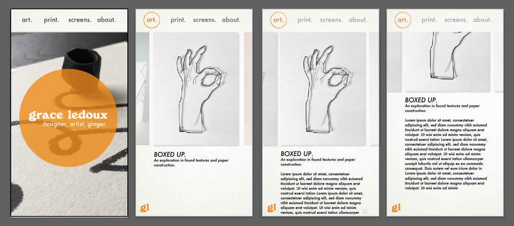

APRIL 10, 2018
Mobile
Over the weekend, I played around with sketching for the mobile version of my site. Here's the same basic flow I outlined last time, this time on a "phone":
A major difference between the desktop and mobile version is the look of the homepage. I tried and tried to get the kind of collage, photo splay look of the desktop homepage, but all those photos AND the graphic AND the menu all on this little screen got way too busy. This is my current idea for an alternative: using the method I use in my current portfolio site, with one of my videos as the background of the homepage. It declutters the space, lets you focus on the graphic, and is hopefully really interesting and fun to watch.
I have no idea if this is a good idea technically—will it slow down loading the page? Will everything else load super fast then by the time the video is up and playing you've already navigated away? I'll have to do a lot of testing once it's coded.

The rest of the site is essentially a streamlined version of the desktop site. The galleries are still carousels, letting you swipe through the photos until one is interesting.
Then when a project catches your eye, you can tap on it and be taken to its own page (which looks pretty similar to the gallery), with the full description and more photos of that project.
There are a few interesting challenges going on here that I'm still not 100% happy with:
- Including my name or some indication of this being MY site on every page. On the desktop, this isn't hard because there's space, but on mobile, it feels really cluttered to have my full name squeezed onto every page. The solution is probably to use my initials (like in these sketches) or come up with a recognizable, simple logo that will look good in a really small scale. On the to-do list.
- The scroll on the individual project pages. These are the only pages with enough content and text that you need to scroll, which brings up questions like: does the menu at the top have a secret white background that the content disappears behind? Would it be weird to have a side-scrolling gallery on a page that also scrolls vertically? I have a feeling these will be clearer once it's in code, which means I really have to get this into code!